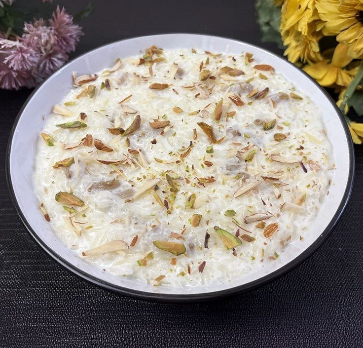

🍚 Kheer

Description:
Kheer is a traditional Indian rice pudding made with milk, rice, and sugar,
flavored with cardamom and garnished with nuts. It’s a comforting and festive
dessert enjoyed across India.
Prep Time:
⏱️ 45 minutes
Ingredients:
- 1/4 cup basmati rice
- 1 liter full-fat milk
- 1/4 to 1/2 cup sugar (adjust to taste)
- 1/4 tsp cardamom powder
- 10-12 almonds and cashews (chopped)
- 5-6 saffron strands (optional)
- 2 tbsp raisins (optional)
Instructions:
- Wash and soak rice for 20 minutes. Drain before use.
- Boil milk in a heavy-bottomed pan. Add rice and cook on low flame.
- Stir occasionally to avoid sticking or burning.
- Once rice is soft and milk thickens, add sugar and mix well.
- Add cardamom powder, chopped nuts, raisins, and saffron strands.
- Simmer for another 5–10 minutes until creamy.
- Serve warm or chilled, garnished with more nuts if desired.